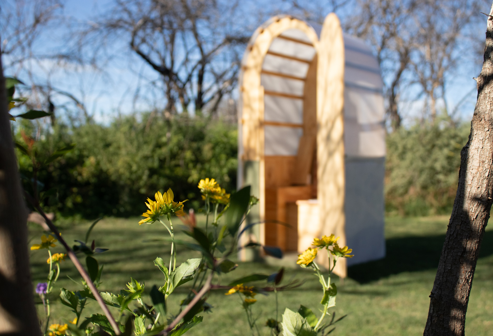

The Mini module is a lightweight, flat‑packed dry toilet designed for disaster relief, humanitarian missions and off‑grid camps. Each unit operates independently of any water or sewer network and uses an efficient composting system.
Fast deployment: assembles in minutes; no heavy machinery or infrastructure needed.
Odorless & hygienic: low humidity and absorbent material prevent germs and smells.
Off‑grid: works without plumbing or electricity; optional solar power modules.
Eco‑friendly: waste is converted to compost for parks and gardens.
Compact & modular: ships flat and can be expanded with accessories.
If you need specifications or pricing information, feel free to reach out.

Mini interior image placeholder
How It Works
Assembly
If you need specifications or pricing information, feel free to reach out.